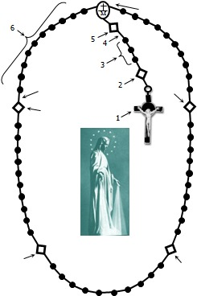
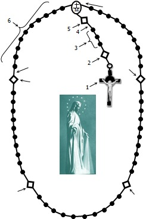

ജപമാല ചൊല്ലേണ്ട രീതി (താഴെയുള്ള ചിത്രം പിന്തുടരുക):
1. കുരിശുവരച്ച് വിശ്വാസപ്രമാണം ചൊല്ലുക.
2. ഈ ഓഗസ്റ്റ് മാസത്തെ പാപ്പായുടെ നിയോഗത്തിനായി പ്രാർത്ഥിക്കുക: പരസ്പര സഹവർത്തിത്വത്തിനു വേണ്ടി. വംശീയമോ, രാഷ്ട്രീയമോ, മതപരമോ, പ്രത്യയശാസ്ത്രപരമോ ആയ കാരണങ്ങളാൽ സംഘർഷം വർദ്ധിക്കുന്ന സമൂഹങ്ങൾ ഏറ്റുമുട്ടലുകളുടെ പ്രലോഭനങ്ങളിൽ വീഴാതെയിരിക്കാൻ നമുക്ക് പ്രാർത്ഥിക്കാം. ഒരു സ്വർഗ്ഗസ്ഥനായ ഞങ്ങളുടെ പിതാവേ എന്ന പ്രാർത്ഥന ചൊല്ലുക.
3. വിശ്വാസം, പ്രത്യാശ, സ്നേഹം എന്നീ പുണ്യങ്ങൾക്കായി മൂന്ന് നന്മ നിറഞ്ഞ മറിയമേ എന്ന പ്രാർത്ഥന ചൊല്ലുക.
4. വിശുദ്ധ മിഖായേൽ മാലാഖയോടുള്ള പ്രാർത്ഥന, സ്തുതി, ഫാത്തിമാ പ്രാർത്ഥന എന്നിവ ചൊല്ലുക.
5. ആദ്യത്തെ രഹസ്യം പ്രഖ്യാപിക്കുക; ആദ്യത്തെ നിയോഗത്തിനായി പ്രാർത്ഥിച്ച് ഒരു സ്വർഗ്ഗസ്ഥനായ ഞങ്ങളുടെ പിതാവേ എന്ന പ്രാർത്ഥന ചൊല്ലുക.
6. രഹസ്യത്തെ ധ്യാനിച്ചുകൊണ്ട് പത്ത് നന്മ നിറഞ്ഞ മറിയമേ എന്ന പ്രാർത്ഥന ചൊല്ലുക.
7. സ്തുതി, ഫാത്തിമാ പ്രാർത്ഥന എന്നിവ ചൊല്ലുക.
8. രണ്ടാമത്തെ രഹസ്യം പ്രഖ്യാപിക്കുക; രണ്ടാമത്തെ നിയോഗത്തിനായി പ്രാർത്ഥിക്കുക; സ്വർഗ്ഗസ്ഥനായ ഞങ്ങളുടെ പിതാവേ എന്ന പ്രാർത്ഥന ചൊല്ലുക.
9. മേൽപ്പറഞ്ഞ 6, 7, 8 എന്നീ പടികൾ ആവർത്തിച്ച് 3, 4, 5 രഹസ്യങ്ങൾ ഇതേ രീതിയിൽ തുടരുക.
10. സ്ലീഹാ റാണി, ജപമാല പ്രാർത്ഥന, ഓർമ്മിക്കണമേ, പരിശുദ്ധ മറിയത്തിന്റെ ലുത്തിനിയ എന്നിവ ചൊല്ലുക.
11. കുരിശുവരയ്ക്കുക.
1. കുരിശുവരച്ച് വിശ്വാസപ്രമാണം ചൊല്ലുക.
2. ഈ ഓഗസ്റ്റ് മാസത്തെ പാപ്പായുടെ നിയോഗത്തിനായി പ്രാർത്ഥിക്കുക: പരസ്പര സഹവർത്തിത്വത്തിനു വേണ്ടി. വംശീയമോ, രാഷ്ട്രീയമോ, മതപരമോ, പ്രത്യയശാസ്ത്രപരമോ ആയ കാരണങ്ങളാൽ സംഘർഷം വർദ്ധിക്കുന്ന സമൂഹങ്ങൾ ഏറ്റുമുട്ടലുകളുടെ പ്രലോഭനങ്ങളിൽ വീഴാതെയിരിക്കാൻ നമുക്ക് പ്രാർത്ഥിക്കാം. ഒരു സ്വർഗ്ഗസ്ഥനായ ഞങ്ങളുടെ പിതാവേ എന്ന പ്രാർത്ഥന ചൊല്ലുക.
3. വിശ്വാസം, പ്രത്യാശ, സ്നേഹം എന്നീ പുണ്യങ്ങൾക്കായി മൂന്ന് നന്മ നിറഞ്ഞ മറിയമേ എന്ന പ്രാർത്ഥന ചൊല്ലുക.
4. വിശുദ്ധ മിഖായേൽ മാലാഖയോടുള്ള പ്രാർത്ഥന, സ്തുതി, ഫാത്തിമാ പ്രാർത്ഥന എന്നിവ ചൊല്ലുക.
5. ആദ്യത്തെ രഹസ്യം പ്രഖ്യാപിക്കുക; ആദ്യത്തെ നിയോഗത്തിനായി പ്രാർത്ഥിച്ച് ഒരു സ്വർഗ്ഗസ്ഥനായ ഞങ്ങളുടെ പിതാവേ എന്ന പ്രാർത്ഥന ചൊല്ലുക.
6. രഹസ്യത്തെ ധ്യാനിച്ചുകൊണ്ട് പത്ത് നന്മ നിറഞ്ഞ മറിയമേ എന്ന പ്രാർത്ഥന ചൊല്ലുക.
7. സ്തുതി, ഫാത്തിമാ പ്രാർത്ഥന എന്നിവ ചൊല്ലുക.
8. രണ്ടാമത്തെ രഹസ്യം പ്രഖ്യാപിക്കുക; രണ്ടാമത്തെ നിയോഗത്തിനായി പ്രാർത്ഥിക്കുക; സ്വർഗ്ഗസ്ഥനായ ഞങ്ങളുടെ പിതാവേ എന്ന പ്രാർത്ഥന ചൊല്ലുക.
9. മേൽപ്പറഞ്ഞ 6, 7, 8 എന്നീ പടികൾ ആവർത്തിച്ച് 3, 4, 5 രഹസ്യങ്ങൾ ഇതേ രീതിയിൽ തുടരുക.
10. സ്ലീഹാ റാണി, ജപമാല പ്രാർത്ഥന, ഓർമ്മിക്കണമേ, പരിശുദ്ധ മറിയത്തിന്റെ ലുത്തിനിയ എന്നിവ ചൊല്ലുക.
11. കുരിശുവരയ്ക്കുക.
ജപമാലയിലെ പത്ത് പ്രാർത്ഥനകൾ
1. കുരിശുവര [GEN.18.1-2 1JN 5:7]
പിതാവിന്റെയും പുത്രന്റെയും പരിശുദ്ധാത്മാവിന്റെയും നാമത്തിൽ. ആമേൻ.
2. വിശ്വാസപ്രമാണം [GEN 1:1 LUK 1:35 JHN 1:1 MAT 28:6 MAT 16:18]
സർവ്വശക്തനായ പിതാവും ആകാശത്തിന്റെയും ഭൂമിയുടെയും സ്രഷ്ടാവുമായ ദൈവത്തിൽ ഞാൻ വിശ്വസിക്കുന്നു. അവിടുത്തെ ഏകപുത്രനും ഞങ്ങളുടെ കർത്താവുമായ ഈശോമിശിഹായിലും ഞാൻ വിശ്വസിക്കുന്നു. ഈ പുത്രൻ പരിശുദ്ധാത്മാവാൽ ഗർഭസ്ഥനായി കന്യകാമറിയത്തിൽ നിന്ന് പിറന്നു, പീലാത്തോസിന്റെ കാലത്ത് പീഡകൾ സഹിച്ച് കുരിശിൽ തറക്കപ്പെട്ട് മരിച്ച് അടക്കപ്പെട്ടു, പാതാളത്തില ഇറങ്ങി, മൂന്നാം ദിവസം മരിച്ചവരിൽ നിന്ന് ഉയിർത്തെഴുന്നേറ്റ് സ്വർഗ്ഗത്തിലേക്കെഴുന്നള്ളി, സർവ്വശക്തനായ പിതാവായ ദൈവത്തിന്റെ വലതുഭാഗത്ത് ഇരിക്കുന്നു, അവിടെ നിന്ന് ജീവിക്കുന്നവരെയും മരിച്ചവരെയും വിധിക്കാൻ വരും. പരിശുദ്ധാത്മാവിൽ ഞാൻ വിശ്വസിക്കുന്നു, വിശുദ്ധ കത്തോലിക്കാ സഭയിൽ, പുണ്യവാന്മാരുടെ ഐക്യത്തിൽ, പാപങ്ങളുടെ മോചനത്തിൽ, ശരീരത്തിന്റെ ഉയിർപ്പിൽ, നിത്യമായ ജീവിതത്തിൽ ഞാൻ വിശ്വസിക്കുന്നു. ആമേൻ.
3. സ്വർഗ്ഗസ്ഥനായ ഞങ്ങളുടെ പിതാവേ [PSA 89:26 WIS 2:16 JHN 20:17 MAT 6:9-13]
സ്വർഗ്ഗസ്ഥനായ ഞങ്ങളുടെ പിതാവേ, അങ്ങയുടെ നാമം പൂജിതമാകണമേ. അങ്ങയുടെ രാജ്യം വരണമേ. അങ്ങയുടെ തിരുമനസ്സ് സ്വർഗ്ഗത്തിലെപ്പോലെ ഭൂമിയിലും ആകണമേ. അന്നന്നു വേണ്ട ആഹാരം ഇന്നു ഞങ്ങൾക്ക് തരേണമേ. ഞങ്ങളോട് തെറ്റ് ചെയ്തവരോട് ഞങ്ങൾ ക്ഷമിക്കുന്നതുപോലെ ഞങ്ങളുടെ തെറ്റുകൾ ഞങ്ങളോടും ക്ഷമിക്കണമേ. ഞങ്ങളെ പ്രലോഭനത്തിൽ വീഴാൻ അനുവദിക്കരുതേ, തിന്മയിൽ നിന്നും ഞങ്ങളെ രക്ഷിക്കണമേ. ആമേൻ.
4. നന്മ നിറഞ്ഞ മറിയമേ [LUK 1:28 LUK 1:48 MAT 2:11 2TH 3:1]
നന്മ നിറഞ്ഞ മറിയമേ, നിനക്ക് സ്തുതി. കർത്താവ് നിന്നോടുകൂടെ. സ്ത്രീകളിൽ നീ അനുഗ്രഹിക്കപ്പെട്ടവളാകുന്നു. നിന്റെ ഉദരഫലമായ ഈശോ അനുഗ്രഹിക്കപ്പെട്ടവനാകുന്നു. പരിശുദ്ധ മറിയമേ, തമ്പുരാന്റെ അമ്മേ, പാപികളായ ഞങ്ങൾക്കുവേണ്ടി, ഇപ്പോഴും ഞങ്ങളുടെ മരണസമയത്തും തമ്പുരാനോട് അപേക്ഷിക്കണമേ. ആമേൻ.
1. കുരിശുവര [GEN.18.1-2 1JN 5:7]
പിതാവിന്റെയും പുത്രന്റെയും പരിശുദ്ധാത്മാവിന്റെയും നാമത്തിൽ. ആമേൻ.
2. വിശ്വാസപ്രമാണം [GEN 1:1 LUK 1:35 JHN 1:1 MAT 28:6 MAT 16:18]
സർവ്വശക്തനായ പിതാവും ആകാശത്തിന്റെയും ഭൂമിയുടെയും സ്രഷ്ടാവുമായ ദൈവത്തിൽ ഞാൻ വിശ്വസിക്കുന്നു. അവിടുത്തെ ഏകപുത്രനും ഞങ്ങളുടെ കർത്താവുമായ ഈശോമിശിഹായിലും ഞാൻ വിശ്വസിക്കുന്നു. ഈ പുത്രൻ പരിശുദ്ധാത്മാവാൽ ഗർഭസ്ഥനായി കന്യകാമറിയത്തിൽ നിന്ന് പിറന്നു, പീലാത്തോസിന്റെ കാലത്ത് പീഡകൾ സഹിച്ച് കുരിശിൽ തറക്കപ്പെട്ട് മരിച്ച് അടക്കപ്പെട്ടു, പാതാളത്തില ഇറങ്ങി, മൂന്നാം ദിവസം മരിച്ചവരിൽ നിന്ന് ഉയിർത്തെഴുന്നേറ്റ് സ്വർഗ്ഗത്തിലേക്കെഴുന്നള്ളി, സർവ്വശക്തനായ പിതാവായ ദൈവത്തിന്റെ വലതുഭാഗത്ത് ഇരിക്കുന്നു, അവിടെ നിന്ന് ജീവിക്കുന്നവരെയും മരിച്ചവരെയും വിധിക്കാൻ വരും. പരിശുദ്ധാത്മാവിൽ ഞാൻ വിശ്വസിക്കുന്നു, വിശുദ്ധ കത്തോലിക്കാ സഭയിൽ, പുണ്യവാന്മാരുടെ ഐക്യത്തിൽ, പാപങ്ങളുടെ മോചനത്തിൽ, ശരീരത്തിന്റെ ഉയിർപ്പിൽ, നിത്യമായ ജീവിതത്തിൽ ഞാൻ വിശ്വസിക്കുന്നു. ആമേൻ.
3. സ്വർഗ്ഗസ്ഥനായ ഞങ്ങളുടെ പിതാവേ [PSA 89:26 WIS 2:16 JHN 20:17 MAT 6:9-13]
സ്വർഗ്ഗസ്ഥനായ ഞങ്ങളുടെ പിതാവേ, അങ്ങയുടെ നാമം പൂജിതമാകണമേ. അങ്ങയുടെ രാജ്യം വരണമേ. അങ്ങയുടെ തിരുമനസ്സ് സ്വർഗ്ഗത്തിലെപ്പോലെ ഭൂമിയിലും ആകണമേ. അന്നന്നു വേണ്ട ആഹാരം ഇന്നു ഞങ്ങൾക്ക് തരേണമേ. ഞങ്ങളോട് തെറ്റ് ചെയ്തവരോട് ഞങ്ങൾ ക്ഷമിക്കുന്നതുപോലെ ഞങ്ങളുടെ തെറ്റുകൾ ഞങ്ങളോടും ക്ഷമിക്കണമേ. ഞങ്ങളെ പ്രലോഭനത്തിൽ വീഴാൻ അനുവദിക്കരുതേ, തിന്മയിൽ നിന്നും ഞങ്ങളെ രക്ഷിക്കണമേ. ആമേൻ.
4. നന്മ നിറഞ്ഞ മറിയമേ [LUK 1:28 LUK 1:48 MAT 2:11 2TH 3:1]
നന്മ നിറഞ്ഞ മറിയമേ, നിനക്ക് സ്തുതി. കർത്താവ് നിന്നോടുകൂടെ. സ്ത്രീകളിൽ നീ അനുഗ്രഹിക്കപ്പെട്ടവളാകുന്നു. നിന്റെ ഉദരഫലമായ ഈശോ അനുഗ്രഹിക്കപ്പെട്ടവനാകുന്നു. പരിശുദ്ധ മറിയമേ, തമ്പുരാന്റെ അമ്മേ, പാപികളായ ഞങ്ങൾക്കുവേണ്ടി, ഇപ്പോഴും ഞങ്ങളുടെ മരണസമയത്തും തമ്പുരാനോട് അപേക്ഷിക്കണമേ. ആമേൻ.
ജപമാലയിലെ പ്രാർത്ഥനകൾ, തുടരുന്നു:
5. സ്തുതി [1JN 5:7 2TH 1:2 MAT 28:19 EPH 3:21]
പിതാവിനും പുത്രനും പരിശുദ്ധാത്മാവിനും സ്തുതി. ആദിയിലായിരുന്നതുപോലെ ഇപ്പോഴും എപ്പോഴും എന്നേക്കും. ആമേൻ.
6. ഫാത്തിമാ പ്രാർത്ഥന
ഓ എന്റെ ഈശോയെ, ഞങ്ങളുടെ പാപങ്ങൾ പൊറുക്കണമേ, നരകാഗ്നിയിൽ നിന്ന് ഞങ്ങളെ രക്ഷിക്കണമേ, എല്ലാ ആത്മാക്കളെയും, പ്രത്യേകിച്ചും അങ്ങയുടെ കാരുണ്യം കൂടുതൽ ആവശ്യമുള്ളവരെയും സ്വർഗ്ഗത്തിലേക്ക് ആനയിക്കണമേ. ആമേൻ.
7. സ്ലീഹാ റാണി [REV 12:1 SIR 24:25 GEN 3:23 GEN 3:15]
സ്ലീഹാറാണി, കരുണയുടെ മാതാവേ, സ്വസ്തി! ഞങ്ങളുടെ ജീവൻ, ഞങ്ങളുടെ മധുരം, ഞങ്ങളുടെ ശരണം. ഹവ്വായുടെ പുറംതള്ളപ്പെട്ട മക്കളായ ഞങ്ങൾ നിന്നോടു നിലവിളിക്കുന്നു. ഈ കണ്ണീർ താഴ്വരയിൽനിന്ന് നെടുവീർപ്പോടെ ഞങ്ങൾ നിന്നോടു അപേക്ഷിക്കുന്നു. ആകയാൽ ഞങ്ങളുടെ മദ്ധ്യസ്ഥേ, ഞങ്ങളുടെ നേർക്ക് നിന്റെ കരുണയുള്ള കണ്ണുകൾ തിരിക്കണമേ. ഞങ്ങളുടെ ഈ പ്രവാസത്തിനുശേഷം നിന്റെ ഉദരത്തിന്റെ അനുഗ്രഹീത ഫലമായ ഈശോയെ ഞങ്ങൾക്ക് കാണിച്ചുതരണമേ. ഓ കരുണാമയി, സ്നേഹമയി, മധുരമനോഹരി, കന്യകാമറിയമേ! ആമേൻ.
നേതാവ്: ദൈവത്തിന്റെ പരിശുദ്ധ അമ്മേ, ഞങ്ങൾക്കുവേണ്ടി അപേക്ഷിക്കണമേ.
പ്രതികരണം: ഞങ്ങൾ ക്രിസ്തുവിന്റെ വാഗ്ദാനങ്ങൾക്ക് യോഗ്യരാകുവാൻവേണ്ടി.
8. ജപമാല പ്രാർത്ഥന [JHN 1:14 ROM 5:8 MAT 28:6 JHN 3:16]
പ്രാർത്ഥിക്കാം.
കർത്താവേ, പൂർണ്ണമനസ്സോടുകൂടി സാഷ്ടാംഗം വീണുകിടക്കുന്ന ഈ കുടുംബത്തെ തരിക്കണ് പാർത്തു നിത്യകന്യകയായ പരിശുദ്ധ മറിയത്തിന്റെ അപേക്ഷയാല് സകല ശത്രുകളുടേയും ഉപദ്രവങ്ങളിൽ നിന്നു രക്ഷിച്ചുകൊള്ളണമേ. ഈ അപേക്ഷകളോക്കെയും ഞങ്ങളുടെ കർത്താവീശോമിശിഹായുടെ യോഗ്യതകളെക്കുറിച്ചു ഞങ്ങള്ക്കു തരേണമേ. ആമ്മേന്
9. ഓർമ്മിക്കണമേ [LUK 1:46 LUK 1:45 JHN 2:3-5]
ഓർമ്മിക്കണമേ, അത്യന്തം ദയയുള്ള കന്യകാമറിയമേ, നിന്റെ സങ്കേതത്തിൽ ഓടിവന്ന്, നിന്റെ സഹായം തേടി, നിന്റെ മദ്ധ്യസ്ഥത അപേക്ഷിച്ച ആരെയും നീ ഉപേക്ഷിച്ചിട്ടില്ല എന്ന് ലോകത്തിൽ കേട്ടിട്ടില്ല. ഈ വിശ്വാസത്തിൽ ആശ്രയിച്ച്, കന്യാസ്ത്രീകളുടെ രാജ്ഞിയായ കന്യകയേ, എന്റെ അമ്മേ, നിന്റെ പക്കലേക്ക് ഞാൻ വരുന്നു; പാപിയായ ഞാൻ കണ്ണീരോടെ നിന്റെ സന്നിധിയിൽ നിൽക്കുന്നു. ദൈവത്തിന്റെ അവതരിച്ച വചനത്തിന്റെ അമ്മേ, എന്റെ അപേക്ഷകൾ ഉപേക്ഷിക്കരുതേ, നിന്റെ ദയയിൽ എന്നെ കേൾക്കുകയും എന്റെ അപേക്ഷയ്ക്ക് ഉത്തരം നൽകുകയും ചെയ്യണമേ. ആമേൻ.
10. വിശുദ്ധ മിഖായേൽ മാലാഖയോടുള്ള പ്രാർത്ഥന [DAN 12:1 JUD 1:9 REV 12:7]
സ്വർഗ്ഗീയ സൈന്യങ്ങളുടെ പ്രഭുവും മാലാഖമാരുടെ തലവനുമായ വിശുദ്ധ മിഖായേൽ മാലാഖയേ, യുദ്ധത്തിൽ ഞങ്ങളെ സംരക്ഷിക്കണമേ. പിശാചിന്റെ കുതന്ത്രങ്ങൾക്കും കെണികൾക്കും എതിരെ ഞങ്ങൾക്ക് കോട്ടയാകണമേ. ദൈവമേ, അവിടുന്ന് അവനെ ശാസിക്കുമെന്ന് ഞങ്ങൾ താഴ്മയോടെ പ്രാർത്ഥിക്കുന്നു. സ്വർഗ്ഗീയ സൈന്യങ്ങളുടെ പ്രഭുവായ അങ്ങു ദൈവത്തിന്റെ ശക്തിയാൽ സാത്താനെയും മറ്റ് ദുഷ്ടാത്മാക്കളെയും നരകത്തിലേക്ക് തള്ളിവിടണമേ, അവർ ലോകം ചുറ്റി ആത്മാക്കളെ നശിപ്പിക്കാൻ ശ്രമിക്കുന്നു. ആമേൻ.
5. സ്തുതി [1JN 5:7 2TH 1:2 MAT 28:19 EPH 3:21]
പിതാവിനും പുത്രനും പരിശുദ്ധാത്മാവിനും സ്തുതി. ആദിയിലായിരുന്നതുപോലെ ഇപ്പോഴും എപ്പോഴും എന്നേക്കും. ആമേൻ.
6. ഫാത്തിമാ പ്രാർത്ഥന
ഓ എന്റെ ഈശോയെ, ഞങ്ങളുടെ പാപങ്ങൾ പൊറുക്കണമേ, നരകാഗ്നിയിൽ നിന്ന് ഞങ്ങളെ രക്ഷിക്കണമേ, എല്ലാ ആത്മാക്കളെയും, പ്രത്യേകിച്ചും അങ്ങയുടെ കാരുണ്യം കൂടുതൽ ആവശ്യമുള്ളവരെയും സ്വർഗ്ഗത്തിലേക്ക് ആനയിക്കണമേ. ആമേൻ.
7. സ്ലീഹാ റാണി [REV 12:1 SIR 24:25 GEN 3:23 GEN 3:15]
സ്ലീഹാറാണി, കരുണയുടെ മാതാവേ, സ്വസ്തി! ഞങ്ങളുടെ ജീവൻ, ഞങ്ങളുടെ മധുരം, ഞങ്ങളുടെ ശരണം. ഹവ്വായുടെ പുറംതള്ളപ്പെട്ട മക്കളായ ഞങ്ങൾ നിന്നോടു നിലവിളിക്കുന്നു. ഈ കണ്ണീർ താഴ്വരയിൽനിന്ന് നെടുവീർപ്പോടെ ഞങ്ങൾ നിന്നോടു അപേക്ഷിക്കുന്നു. ആകയാൽ ഞങ്ങളുടെ മദ്ധ്യസ്ഥേ, ഞങ്ങളുടെ നേർക്ക് നിന്റെ കരുണയുള്ള കണ്ണുകൾ തിരിക്കണമേ. ഞങ്ങളുടെ ഈ പ്രവാസത്തിനുശേഷം നിന്റെ ഉദരത്തിന്റെ അനുഗ്രഹീത ഫലമായ ഈശോയെ ഞങ്ങൾക്ക് കാണിച്ചുതരണമേ. ഓ കരുണാമയി, സ്നേഹമയി, മധുരമനോഹരി, കന്യകാമറിയമേ! ആമേൻ.
നേതാവ്: ദൈവത്തിന്റെ പരിശുദ്ധ അമ്മേ, ഞങ്ങൾക്കുവേണ്ടി അപേക്ഷിക്കണമേ.
പ്രതികരണം: ഞങ്ങൾ ക്രിസ്തുവിന്റെ വാഗ്ദാനങ്ങൾക്ക് യോഗ്യരാകുവാൻവേണ്ടി.
8. ജപമാല പ്രാർത്ഥന [JHN 1:14 ROM 5:8 MAT 28:6 JHN 3:16]
പ്രാർത്ഥിക്കാം.
കർത്താവേ, പൂർണ്ണമനസ്സോടുകൂടി സാഷ്ടാംഗം വീണുകിടക്കുന്ന ഈ കുടുംബത്തെ തരിക്കണ് പാർത്തു നിത്യകന്യകയായ പരിശുദ്ധ മറിയത്തിന്റെ അപേക്ഷയാല് സകല ശത്രുകളുടേയും ഉപദ്രവങ്ങളിൽ നിന്നു രക്ഷിച്ചുകൊള്ളണമേ. ഈ അപേക്ഷകളോക്കെയും ഞങ്ങളുടെ കർത്താവീശോമിശിഹായുടെ യോഗ്യതകളെക്കുറിച്ചു ഞങ്ങള്ക്കു തരേണമേ. ആമ്മേന്
9. ഓർമ്മിക്കണമേ [LUK 1:46 LUK 1:45 JHN 2:3-5]
ഓർമ്മിക്കണമേ, അത്യന്തം ദയയുള്ള കന്യകാമറിയമേ, നിന്റെ സങ്കേതത്തിൽ ഓടിവന്ന്, നിന്റെ സഹായം തേടി, നിന്റെ മദ്ധ്യസ്ഥത അപേക്ഷിച്ച ആരെയും നീ ഉപേക്ഷിച്ചിട്ടില്ല എന്ന് ലോകത്തിൽ കേട്ടിട്ടില്ല. ഈ വിശ്വാസത്തിൽ ആശ്രയിച്ച്, കന്യാസ്ത്രീകളുടെ രാജ്ഞിയായ കന്യകയേ, എന്റെ അമ്മേ, നിന്റെ പക്കലേക്ക് ഞാൻ വരുന്നു; പാപിയായ ഞാൻ കണ്ണീരോടെ നിന്റെ സന്നിധിയിൽ നിൽക്കുന്നു. ദൈവത്തിന്റെ അവതരിച്ച വചനത്തിന്റെ അമ്മേ, എന്റെ അപേക്ഷകൾ ഉപേക്ഷിക്കരുതേ, നിന്റെ ദയയിൽ എന്നെ കേൾക്കുകയും എന്റെ അപേക്ഷയ്ക്ക് ഉത്തരം നൽകുകയും ചെയ്യണമേ. ആമേൻ.
10. വിശുദ്ധ മിഖായേൽ മാലാഖയോടുള്ള പ്രാർത്ഥന [DAN 12:1 JUD 1:9 REV 12:7]
സ്വർഗ്ഗീയ സൈന്യങ്ങളുടെ പ്രഭുവും മാലാഖമാരുടെ തലവനുമായ വിശുദ്ധ മിഖായേൽ മാലാഖയേ, യുദ്ധത്തിൽ ഞങ്ങളെ സംരക്ഷിക്കണമേ. പിശാചിന്റെ കുതന്ത്രങ്ങൾക്കും കെണികൾക്കും എതിരെ ഞങ്ങൾക്ക് കോട്ടയാകണമേ. ദൈവമേ, അവിടുന്ന് അവനെ ശാസിക്കുമെന്ന് ഞങ്ങൾ താഴ്മയോടെ പ്രാർത്ഥിക്കുന്നു. സ്വർഗ്ഗീയ സൈന്യങ്ങളുടെ പ്രഭുവായ അങ്ങു ദൈവത്തിന്റെ ശക്തിയാൽ സാത്താനെയും മറ്റ് ദുഷ്ടാത്മാക്കളെയും നരകത്തിലേക്ക് തള്ളിവിടണമേ, അവർ ലോകം ചുറ്റി ആത്മാക്കളെ നശിപ്പിക്കാൻ ശ്രമിക്കുന്നു. ആമേൻ.
~ ~ ~ ~ ജപമാലയുടെ രഹസ്യങ്ങൾ ~ ~ ~ ~
ഓരോ പതിറ്റാണ്ടിലും (പത്ത് നന്മ നിറഞ്ഞ മറിയമേ) ഈ രഹസ്യങ്ങളെ ധ്യാനിക്കുക
ഓരോ പതിറ്റാണ്ടിലും (പത്ത് നന്മ നിറഞ്ഞ മറിയമേ) ഈ രഹസ്യങ്ങളെ ധ്യാനിക്കുക
നിയോഗങ്ങൾ (ഓരോ പതിറ്റാണ്ടിലും ഒരു നിയോഗം)
നാം പ്രാർത്ഥിക്കുന്നു...
1. രോഗികൾ സുഖം പ്രാപിക്കാനും രോഗവ്യാപനം നിയന്ത്രിക്കാനും.
2. ലഹരിക്ക് അടിമപ്പെട്ടവർക്ക് അത് അതിജീവിക്കാൻ സഹായം ലഭിക്കാനും.
3. പ്രിയപ്പെട്ടവരെ നഷ്ടപ്പെട്ട കുടുംബങ്ങളിൽ സമാധാനം ഉണ്ടാകാനും.
4. ലോകത്തിലെ സാമ്പത്തിക വ്യവസ്ഥകൾ വികസിപ്പിച്ച് എല്ലാവർക്കും മെച്ചപ്പെട്ട ജീവിതം നൽകാനും.
5. എല്ലാ ഭരണകൂടങ്ങൾക്കും അഴിമതിയും സത്യസന്ധതയില്ലായ്മയും കൈകാര്യം ചെയ്യാൻ ജ്ഞാനം ലഭിക്കാനും.
നാം പ്രാർത്ഥിക്കുന്നു...
1. രോഗികൾ സുഖം പ്രാപിക്കാനും രോഗവ്യാപനം നിയന്ത്രിക്കാനും.
2. ലഹരിക്ക് അടിമപ്പെട്ടവർക്ക് അത് അതിജീവിക്കാൻ സഹായം ലഭിക്കാനും.
3. പ്രിയപ്പെട്ടവരെ നഷ്ടപ്പെട്ട കുടുംബങ്ങളിൽ സമാധാനം ഉണ്ടാകാനും.
4. ലോകത്തിലെ സാമ്പത്തിക വ്യവസ്ഥകൾ വികസിപ്പിച്ച് എല്ലാവർക്കും മെച്ചപ്പെട്ട ജീവിതം നൽകാനും.
5. എല്ലാ ഭരണകൂടങ്ങൾക്കും അഴിമതിയും സത്യസന്ധതയില്ലായ്മയും കൈകാര്യം ചെയ്യാൻ ജ്ഞാനം ലഭിക്കാനും.
മഹത്വത്തിന്റെ രഹസ്യങ്ങൾ (ഞായർ, ബുധൻ)
1. കർത്താവിന്റെ ഉയിർപ്പ് LUK 24:1-49
2. കർത്താവ് ഈശോ സ്വർഗ്ഗാരോഹണം ചെയ്യുന്നത് LUK 24:50-53
3. ആദ്യത്തെ പന്തക്കുസ്തായിൽ പരിശുദ്ധാത്മാവ് ഇറങ്ങിവരുന്നത് ACT 2:1-41
4. പരിശുദ്ധ കന്യകാമറിയം സ്വർഗ്ഗത്തിലേക്ക് കരേറ്റപ്പെടുന്നത് REV 11:19 REV 12:1-6
5. പരിശുദ്ധ കന്യകാമറിയം സ്വർഗ്ഗത്തിന്റെയും ഭൂമിയുടെയും രാജ്ഞിയായി കിരീടം ധരിക്കുന്നത് LUK 1:46-55
1. കർത്താവിന്റെ ഉയിർപ്പ് LUK 24:1-49
2. കർത്താവ് ഈശോ സ്വർഗ്ഗാരോഹണം ചെയ്യുന്നത് LUK 24:50-53
3. ആദ്യത്തെ പന്തക്കുസ്തായിൽ പരിശുദ്ധാത്മാവ് ഇറങ്ങിവരുന്നത് ACT 2:1-41
4. പരിശുദ്ധ കന്യകാമറിയം സ്വർഗ്ഗത്തിലേക്ക് കരേറ്റപ്പെടുന്നത് REV 11:19 REV 12:1-6
5. പരിശുദ്ധ കന്യകാമറിയം സ്വർഗ്ഗത്തിന്റെയും ഭൂമിയുടെയും രാജ്ഞിയായി കിരീടം ധരിക്കുന്നത് LUK 1:46-55
സന്തോഷത്തിന്റെ രഹസ്യങ്ങൾ (തിങ്കൾ, ശനി)
1. ഗബ്രിയേൽ മാലാഖ ഈശോയുടെ ജനനത്തെക്കുറിച്ച് മറിയത്തോട് അറിയിക്കുന്നത് LUK 1:26-38
2. വിശുദ്ധ മറിയം അവളുടെ കസിൻ വിശുദ്ധ എലിസബത്തിനെ സന്ദർശിക്കുന്നത് LUK 1:39-56
3. നമ്മുടെ കർത്താവ് ഈശോയുടെ ജനനം LUK 2:1-20
4. ശിശുവായ ഈശോയെ ദേവാലയത്തിൽ ശിമയോന് സമർപ്പിക്കുന്നത് LUK 2:22-38
5. ശിശുവായ ഈശോയെ ദേവാലയത്തിൽ കണ്ടെത്തുന്നത് LUK 2:41-52
1. ഗബ്രിയേൽ മാലാഖ ഈശോയുടെ ജനനത്തെക്കുറിച്ച് മറിയത്തോട് അറിയിക്കുന്നത് LUK 1:26-38
2. വിശുദ്ധ മറിയം അവളുടെ കസിൻ വിശുദ്ധ എലിസബത്തിനെ സന്ദർശിക്കുന്നത് LUK 1:39-56
3. നമ്മുടെ കർത്താവ് ഈശോയുടെ ജനനം LUK 2:1-20
4. ശിശുവായ ഈശോയെ ദേവാലയത്തിൽ ശിമയോന് സമർപ്പിക്കുന്നത് LUK 2:22-38
5. ശിശുവായ ഈശോയെ ദേവാലയത്തിൽ കണ്ടെത്തുന്നത് LUK 2:41-52
ദുഃഖത്തിന്റെ രഹസ്യങ്ങൾ (ചൊവ്വ, വെള്ളി)
1. ഒലിവുമലയിലെ മരണവേദന LUK 22:39-46
2. കശാപ്പുതൂണിലെ ചമ്മട്ടിയടി JHN 19:1
3. മുൾക്കിരീടം ധരിക്കുന്നത് JHN 19:2-3
4. കുരിശുമായി മലമുകളിലേക്ക് പോകുന്നത് LUK 23:26-32
5. നമ്മുടെ കർത്താവ് ഈശോയുടെ കുരിശുമരണവും മരണവും LUK 23:33-49
1. ഒലിവുമലയിലെ മരണവേദന LUK 22:39-46
2. കശാപ്പുതൂണിലെ ചമ്മട്ടിയടി JHN 19:1
3. മുൾക്കിരീടം ധരിക്കുന്നത് JHN 19:2-3
4. കുരിശുമായി മലമുകളിലേക്ക് പോകുന്നത് LUK 23:26-32
5. നമ്മുടെ കർത്താവ് ഈശോയുടെ കുരിശുമരണവും മരണവും LUK 23:33-49
പ്രകാശത്തിന്റെ രഹസ്യങ്ങൾ (വ്യാഴം)
1. ജോർദാനിലെ ഈശോയുടെ മാമോദീസ LUK 3:21-22
2. കാനായിലെ കല്യാണം JHN 2:1-11
3. രാജ്യത്തിന്റെ പ്രഖ്യാപനവും പരിവർത്തനത്തിലേക്കുള്ള വിളി LUK 2:1-11
4. രൂപാന്തരീകരണം LUK 9:28-36
5. കുർബാന സ്ഥാപിക്കുന്നത് LUK 22:19-20
1. ജോർദാനിലെ ഈശോയുടെ മാമോദീസ LUK 3:21-22
2. കാനായിലെ കല്യാണം JHN 2:1-11
3. രാജ്യത്തിന്റെ പ്രഖ്യാപനവും പരിവർത്തനത്തിലേക്കുള്ള വിളി LUK 2:1-11
4. രൂപാന്തരീകരണം LUK 9:28-36
5. കുർബാന സ്ഥാപിക്കുന്നത് LUK 22:19-20
7, ഓരോ പതിറ്റാണ്ടിനും ശേഷം.
JHN 17:17 > “Sanctify them in Truth"
9, രണ്ടാം രഹസ്യത്തോടെ
9, മൂന്നാം രഹസ്യത്തോടെ
9, നാലാം രഹസ്യത്തോടെ
9, അഞ്ചാം രഹസ്യത്തോടെ
10 & 11
ലൂയിസ് ഡി മോണ്ട്ഫോർട്ടിന്റെ: ജപമാലയുടെ രഹസ്യം കാണുക
പരിശുദ്ധ കന്യക ഇത്രയധികം ശക്തയാണ്
WIS 7:13-14 ഞാൻ അവളുടെ സമ്പത്ത് മറച്ചുവെക്കുന്നില്ല. എന്തെന്നാൽ അവൾ മനുഷ്യർക്ക് ഒരു അനന്തമായ നിധിയാണ്!
നല്ല പ്രതിവിധിയുടെ മാതാവ് മറിയം
പരിശുദ്ധ മറിയമേ, അത്യുന്നതന്റെ കൂടാരം
കൃപയുടെ മാതാവ് മറിയം
MSO1 Master
MSO1 Layout 2
Rosary Malayalam 2025-08
Last updated 2025/07/24 16:42
 
